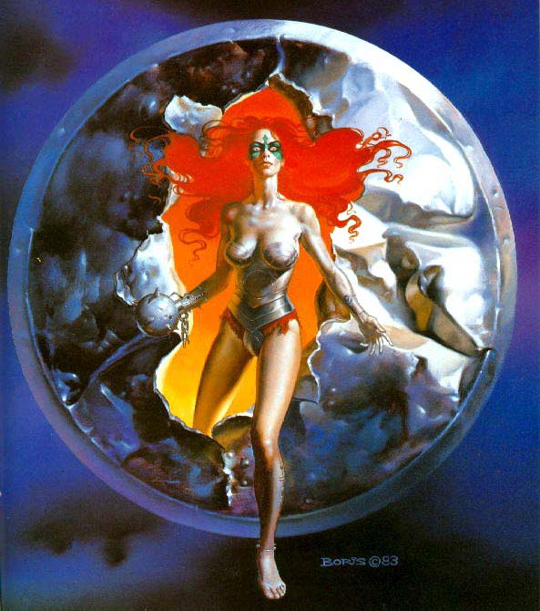
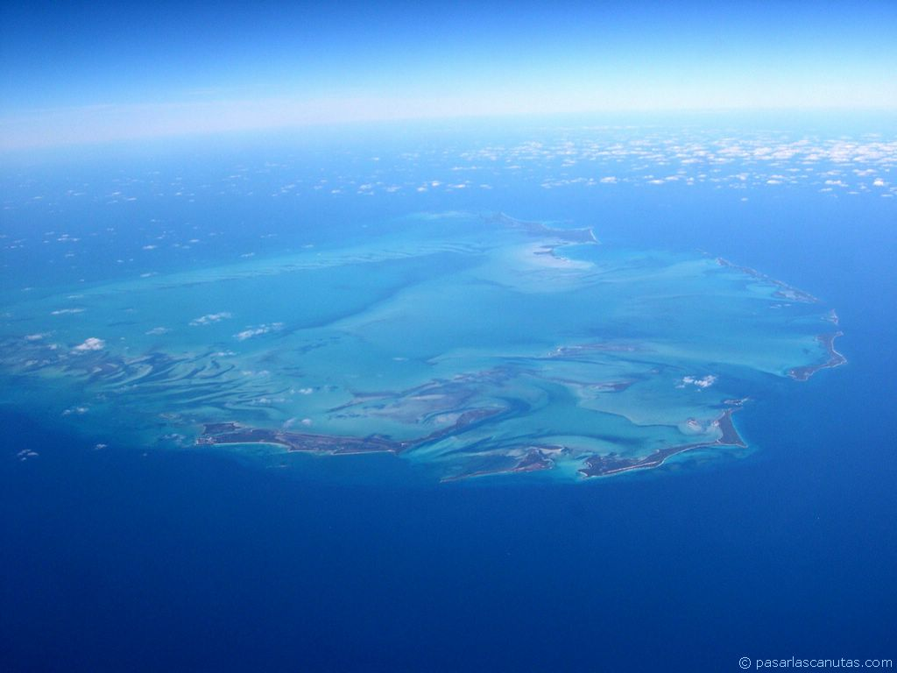
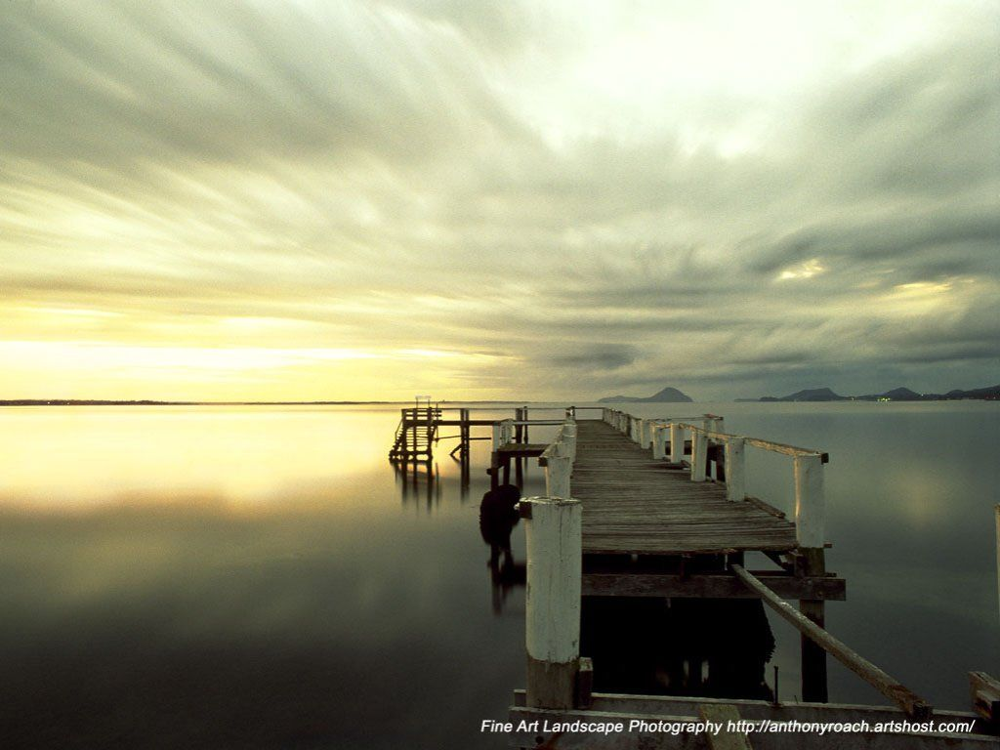
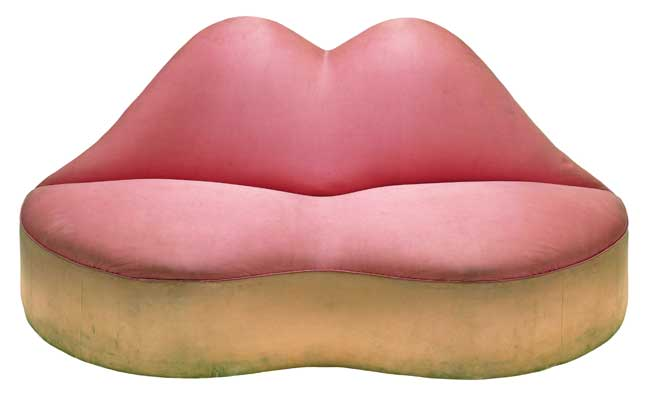

attonita
02/04/2008 - 20:23
Luis royoUno
de los trabajos más sorprendentes de los que yo haya podido ver en los
últimos años que hay realizado un artista del Noveno Arte, ha sido el
libro Dome, un álbum que recoge la experiencia de seis meses de
creación de Luis Royo, junto a su hijo Rómulo, para la creación de 45
bellas mujeres en una cúpula de 80 metros cuadrados. En un castillo de
nueva construcción, para un cliente muy especial, en aquella tierra
fría y lejana, cercana a la ciudad de Moscú (Rusia). Una obra que se
gestó en 2006 y que éste libro recoge, una gran hazaña pictórica, con
una segunda edición recientemente impresa, lanzada a la venta por toda
Europa y Estados Unidos, como así viene reflejado al público al que ha
sido dirigido en 6 idiomas. El propio autor lo manifiesta y refleja el
libro “Durante esos meses vivimos y respiramos el mismo Renacimiento.
No sólo el fresco, sino todo el entorno nos lo reflejaba”. Un hecho que
se puede constatar deleitándose con las imágenes mostradas de las
eróticas y voluptuosas mujeres, que componen los 8 segmentos la cúpula,
donde se muestran temas como la exhibición, el juego, la contemplación
del beso, etc., en un canto a la belleza ideal de la mujer. De
Luis Royo (Olalla, Teruel ,1954), puedo decir que a parte de ser un
gran profesional Noveno Arte, ha influenciado a numerosísimos artistas
en todo el mundo. Sus inicios dieron comienzo en revistas como El
Víbora, 1984, Comix Internacional, Heavy Metal y Rambla; lanzando sus
primeros álbumes: Circulus-Sataka (Garcia & Beà Editores, 1985) y
Desfase (Ikusager, 1986). Pero no sería hasta su entrada en 1983 en
Norma Editorial, cuando su figura como ilustrador se consagró, con sus
fabulosas portadas para la revista Cimoc, y con títulos por todo
nosotros recordados como Women, su primer libro de arte recopilado en
1992. A éste le siguieron Malefic (1994), Secrets (1996), III
Millennium (1998), Dreams (1999), Prohibited Book (1999), Evolution
(2001), Prohibited Book 2 (2001), Conceptions I (2002), Visions (2003),
Prohibited Book 3 (2003), Conceptions II (2003) y Prohibited
Sketchbook, por poner algunos ejemplos. Además del numeroso
merchandising aparecido, como camisetas, pósters, calendarios,
portafolios, postales, trading cards (cromos), barajas de naipes,
carátulas para videojuegos y CDs, esculturas; como podéis leer, toda
una producción muy extensa.
 Dome
el último libro hasta la fecha de Royo, se compone de bocetos, fotos,
diseños, estudios de las mujeres, detalles de las pinturas y sus fases
de creación, junto con los comentarios de los autores y un prólogo del
editor Rafael Martínez. A lo que hay que añadir el regalo de un póster
de la cúpula, para poder disfrutar mejor de la obra del maestro Royo en
compañía de su hijo el pintor Rómulo. Imagino que la realización de
ésta obra ha supuesto para los autores su mayor reto hasta la fecha,
seguramente apasionante, fatigado y toda una proeza de realización para
los tiempos que corren. Ya sólo me queda recomendároslo, por sí aún
todavía no lo habéis comprado amigos
Dome
el último libro hasta la fecha de Royo, se compone de bocetos, fotos,
diseños, estudios de las mujeres, detalles de las pinturas y sus fases
de creación, junto con los comentarios de los autores y un prólogo del
editor Rafael Martínez. A lo que hay que añadir el regalo de un póster
de la cúpula, para poder disfrutar mejor de la obra del maestro Royo en
compañía de su hijo el pintor Rómulo. Imagino que la realización de
ésta obra ha supuesto para los autores su mayor reto hasta la fecha,
seguramente apasionante, fatigado y toda una proeza de realización para
los tiempos que corren. Ya sólo me queda recomendároslo, por sí aún
todavía no lo habéis comprado amigos
attonita
02/04/2008 - 20:32
attonita
02/04/2008 - 22:00
Boris Vallejo
attonita
02/04/2008 - 23:53
attonita
03/04/2008 - 00:00

attonita
03/04/2008 - 10:53
Manifestación.
Decenas de focas de peluche colocadas frente a la embajada de Canadá en
la Ciudad de México, durante una protesta del Partido Verde Ecologista
contra la caza anual de estos animales en el país norteamericano
Nuevas
monedas. Matthew Dent, de 26 años de edad, enseña una de las nuevas
monedas de 50 peniques en Londres. Sus diseños han ganado un concurso
público para las nuevas monedas.
Maternidad. Una l-e-o-n-a lleva a su cachorro recién nacido en el zoológico de Raghdan, Jordania.
attonita
03/04/2008 - 12:38
attonita
03/04/2008 - 12:46
Hola!! 
attonita
03/04/2008 - 15:47
attonita
03/04/2008 - 15:49
attonita
03/04/2008 - 17:58
attonita
03/04/2008 - 18:00
attonita
03/04/2008 - 19:13
Lo que hay que aguantar
Pájaros abusones
Hormiga fortachona
attonita
03/04/2008 - 19:34
¿Quien soy?
Irresistibles
Chica lista
attonita
03/04/2008 - 20:22
attonita
03/04/2008 - 20:38
Skytten
03/04/2008 - 21:02
attonita
03/04/2008 - 21:22
attonita
03/04/2008 - 21:39
attonita
03/04/2008 - 21:46
attonita
03/04/2008 - 22:08
Skytten
03/04/2008 - 22:26
attonita
03/04/2008 - 22:30
Explosión de color

Skytten
04/04/2008 - 00:04
attonita
04/04/2008 - 02:00
attonita
04/04/2008 - 08:05
El
primer avión que vuela con hidrógeno. El fabricante estadounidense de
aeronáutica Boeing ha presentado el primer avión capaz de volar con una
pila de combustible a base de hidrógeno. Lo ha hecho en la localidad
toledana de Ocaña.
Desnudos
por los animales. Activistas de la organización por los derechos de los
animales PETA se manifiestan frente a la embajada británica en Berlín
en contra del uso de pieles de animales.
Una
cueva en el camino. Dos espeleólogos examinan una cueva descubierta
accidentalmente durante los trabajos de construcción del túnel del
futuro tren de alta velocidad cerca de Mausendorf, Alemania. Cientos de
metros cúbicos de hormigón desaparecieron milagrosamente durante los
trabajos de construcción del túnel, el más largo de Alemania, antes de
que los trabajadores descubrieran una cueva de 25 metros de largo, 12
de ancho y nueve de alto.
attonita
04/04/2008 - 13:06
Foto aerea de las islas Bahamas
Alaska Alaska
Alaska
attonita
04/04/2008 - 13:46
Precioso paisaje nevado Puesta de sol... Arizona
Puesta de sol... Arizona El Eden
El Eden
attonita
04/04/2008 - 13:52
attonita
04/04/2008 - 17:26
attonita
04/04/2008 - 17:59
attonita
04/04/2008 - 18:07
attonita
04/04/2008 - 20:33
El
fotoreportero Gervasio Sánchez ha sido el ganador en la categoría de
Periodismo Gráfico por su fotografía Sofía y Alia, de la serie Vidas
minadas, publicada en el Heraldo de Aragón y en el Magazine de La
Vanguardia, por la fuerza expresiva de la instantánea que ha sabido
transmitir la fragilidad e indefensión de las personas sometidas a la
brutalidad de los conflictos bélicos
Vietnam
El atardecer ... maravilloso en la Bahía de Ha Long
De compras por el mercado flotante de Cai Rang
attonita
04/04/2008 - 20:53
attonita
05/04/2008 - 07:19
attonita
05/04/2008 - 13:49

attonita
05/04/2008 - 13:59
attonita
05/04/2008 - 14:09
attonita
05/04/2008 - 14:55
Poder
berlinés. Un rayo láser ilumina la cuádriga de la Puerta de
Brandeburgo. Era una instalación del artista alemán Oliver Bienkowski ,
que tuvo que interrumpir porque no contaba con la autorización del
Senado alemán.
Nouvel
gana el Pritzker. Proyecto del interior del Museo del Louvre de Abu
Dhabi, diseñador por Jean Nouvel. El arquitecto francés, responsable
entre otros proyectos de la Torre Agbar de Barcelona y de la ampliación
del Museo Reina Sofía de Madrid, ha ganado el premio Pritzker, el más
importante en Arquitectura
Cerezos en flor, iluminados cerca del Palacio Real de Tokio.
attonita
05/04/2008 - 15:04
Cabeza.
Trabajos de colocación de la escultura del español Antonio López Día y
Noche en el exterior del Museo de Bellas Artes de Boston,
Massachusetts, EE. UU., con motivo de una exposición del artista en ese
espacio.
Salvador Dalí
Elsa Schiaparelli
Vestido de noche "Esqueleto", 1938
attonita
05/04/2008 - 18:00
'Broche Estrella de Mar', de Salvador Dalí'.

'Sofá en forma de labios de Mae West', de Salvador Dalí.
attonita
05/04/2008 - 18:33
attonita
05/04/2008 - 18:41
attonita
05/04/2008 - 18:52
attonita
05/04/2008 - 20:59
attonita
05/04/2008 - 21:22
abinet
05/04/2008 - 21:28
Juniperus turbinata. Canarias
Skytten
05/04/2008 - 23:21
attonita
05/04/2008 - 23:22
attonita
06/04/2008 - 10:15
Esta es una versión
"reducida (lo-fi)" de nuestro contenido. Para ver la versión completa
con mas información, formato e imágenes, por favor
haz click aquí.